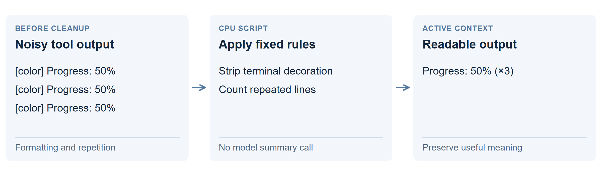

Clean up text before the model reads it
Remove predictable clutter before sending text to the model. A small CPU script can strip terminal decoration or replace repeated output without asking a language model to write a summary.

How it works
A tool might print the same progress line many times, with color-control codes around it. A cleaner can produce one readable line with a repetition count. The useful result stays visible while unnecessary formatting disappears.
Unlike self-editing, fixed rules choose what to change. Unlike a summary, the cleaner does not try to rewrite the meaning of the whole conversation.
What happened in the measurement?
Conservative cleanup removed 1.83% of about five million tokens across three transcripts. That is a small saving: roughly 33K tokens of that material might fit where 32K fitted before.
A separate rule moving large tool outputs to files removed 7.50% from view. That is external storage, with a possible read-back cost, rather than cleanup alone.
Why use it? Where are its limits?
It can cheaply tidy noisy logs. It cannot turn a full window of useful facts into a much smaller one without losing or moving information.
Repetition can itself matter: ten identical errors may mean something different from one. Preserve counts, order and original logs when those affect the task. Removing visible text does not establish that the model will answer equally well.
Technical details: what the census measured
This was token accounting on roughly 4.99 million tokens, not a paired model-quality or decode-speed test. The conservative rules addressed duplicate outputs, repeated lines, whitespace and terminal noise. No trained CPU classifier was benchmarked.
The 7.50% offload figure was measured separately and cannot simply be added to 1.83%. In 54 of 152 large outputs, a line from the hidden middle was quoted later; that indicates possible retrieval needs, not a measured number of file reads.